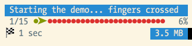

Progress Bar¶
When executing longer-running commands, it may be helpful to show progress information, which updates as your command runs:
To display progress details, use the
ProgressBar, pass it a total
number of units, and advance the progress as the command executes:
use Symfony\Component\Console\Helper\ProgressBar;
// create a new progress bar (50 units)
$progress = new ProgressBar($output, 50);
// start and displays the progress bar
$progress->start();
$i = 0;
while ($i++ < 50) {
// ... do some work
// advance the progress bar 1 unit
$progress->advance();
// you can also advance the progress bar by more than 1 unit
// $progress->advance(3);
}
// ensure that the progress bar is at 100%
$progress->finish();
Instead of advancing the bar by a number of steps (with the
advance() method),
you can also set the current progress by calling the
setProgress() method.
2.6 新版功能: The setProgress() method was called setCurrent() prior to Symfony 2.6.
è¦å‘Š
Prior to version 2.6, the progress bar only works if your platform supports ANSI codes; on other platforms, no output is generated.
2.6 新版功能: If your platform doesn’t support ANSI codes, updates to the progress
bar are added as new lines. To prevent the output from being flooded,
adjust the
setRedrawFrequency()
accordingly. By default, when using a max, the redraw frequency
is set to 10% of your max.
If you don’t know the number of steps in advance, just omit the steps argument
when creating the ProgressBar
instance:
$progress = new ProgressBar($output);
The progress will then be displayed as a throbber:
# no max steps (displays it like a throbber)
0 [>---------------------------]
5 [----->----------------------]
5 [============================]
# max steps defined
0/3 [>---------------------------] 0%
1/3 [=========>------------------] 33%
3/3 [============================] 100%
Whenever your task is finished, don’t forget to call
finish() to ensure
that the progress bar display is refreshed with a 100% completion.
注解
If you want to output something while the progress bar is running,
call clear() first.
After you’re done, call
display()
to show the progress bar again.
Customizing the Progress Bar¶
Built-in Formats¶
By default, the information rendered on a progress bar depends on the current
level of verbosity of the OutputInterface instance:
# OutputInterface::VERBOSITY_NORMAL (CLI with no verbosity flag)
0/3 [>---------------------------] 0%
1/3 [=========>------------------] 33%
3/3 [============================] 100%
# OutputInterface::VERBOSITY_VERBOSE (-v)
0/3 [>---------------------------] 0% 1 sec
1/3 [=========>------------------] 33% 1 sec
3/3 [============================] 100% 1 sec
# OutputInterface::VERBOSITY_VERY_VERBOSE (-vv)
0/3 [>---------------------------] 0% 1 sec
1/3 [=========>------------------] 33% 1 sec
3/3 [============================] 100% 1 sec
# OutputInterface::VERBOSITY_DEBUG (-vvv)
0/3 [>---------------------------] 0% 1 sec/1 sec 1.0 MB
1/3 [=========>------------------] 33% 1 sec/1 sec 1.0 MB
3/3 [============================] 100% 1 sec/1 sec 1.0 MB
注解
If you call a command with the quiet flag (-q), the progress bar won’t
be displayed.
Instead of relying on the verbosity mode of the current command, you can also
force a format via setFormat():
$bar->setFormat('verbose');
The built-in formats are the following:
normalverbosevery_verbosedebug
If you don’t set the number of steps for your progress bar, use the _nomax
variants:
normal_nomaxverbose_nomaxvery_verbose_nomaxdebug_nomax
Custom Formats¶
Instead of using the built-in formats, you can also set your own:
$bar->setFormat('%bar%');
This sets the format to only display the progress bar itself:
>---------------------------
=========>------------------
============================
A progress bar format is a string that contains specific placeholders (a name
enclosed with the % character); the placeholders are replaced based on the
current progress of the bar. Here is a list of the built-in placeholders:
current: The current step;max: The maximum number of steps (or 0 if no max is defined);bar: The bar itself;percent: The percentage of completion (not available if no max is defined);elapsed: The time elapsed since the start of the progress bar;remaining: The remaining time to complete the task (not available if no max is defined);estimated: The estimated time to complete the task (not available if no max is defined);memory: The current memory usage;message: The current message attached to the progress bar.
For instance, here is how you could set the format to be the same as the
debug one:
$bar->setFormat(' %current%/%max% [%bar%] %percent:3s%% %elapsed:6s%/%estimated:-6s% %memory:6s%');
Notice the :6s part added to some placeholders? That’s how you can tweak
the appearance of the bar (formatting and alignment). The part after the colon
(:) is used to set the sprintf format of the string.
The message placeholder is a bit special as you must set the value
yourself:
$bar->setMessage('Task starts');
$bar->start();
$bar->setMessage('Task in progress...');
$bar->advance();
// ...
$bar->setMessage('Task is finished');
$bar->finish();
Instead of setting the format for a given instance of a progress bar, you can also define global formats:
ProgressBar::setFormatDefinition('minimal', 'Progress: %percent%%');
$bar = new ProgressBar($output, 3);
$bar->setFormat('minimal');
This code defines a new minimal format that you can then use for your
progress bars:
Progress: 0%
Progress: 33%
Progress: 100%
å°æŠ€å·§
It is almost always better to redefine built-in formats instead of creating new ones as that allows the display to automatically vary based on the verbosity flag of the command.
When defining a new style that contains placeholders that are only available
when the maximum number of steps is known, you should create a _nomax
variant:
ProgressBar::setFormatDefinition('minimal', '%percent%% %remaining%');
ProgressBar::setFormatDefinition('minimal_nomax', '%percent%%');
$bar = new ProgressBar($output);
$bar->setFormat('minimal');
When displaying the progress bar, the format will automatically be set to
minimal_nomax if the bar does not have a maximum number of steps like in
the example above.
å°æŠ€å·§
A format can contain any valid ANSI codes and can also use the Symfony-specific way to set colors:
ProgressBar::setFormatDefinition(
'minimal',
'<info>%percent%</info>\033[32m%\033[0m <fg=white;bg=blue>%remaining%</>'
);
注解
A format can span more than one line; that’s very useful when you want to display more contextual information alongside the progress bar (see the example at the beginning of this article).
Bar Settings¶
Amongst the placeholders, bar is a bit special as all the characters used
to display it can be customized:
// the finished part of the bar
$progress->setBarCharacter('<comment>=</comment>');
// the unfinished part of the bar
$progress->setEmptyBarCharacter(' ');
// the progress character
$progress->setProgressCharacter('|');
// the bar width
$progress->setBarWidth(50);
è¦å‘Š
For performance reasons, be careful if you set the total number of steps
to a high number. For example, if you’re iterating over a large number of
items, consider setting the redraw frequency to a higher value by calling
setRedrawFrequency(),
so it updates on only some iterations:
$progress = new ProgressBar($output, 50000);
$progress->start();
// update every 100 iterations
$progress->setRedrawFrequency(100);
$i = 0;
while ($i++ < 50000) {
// ... do some work
$progress->advance();
}
Custom Placeholders¶
If you want to display some information that depends on the progress bar
display that are not available in the list of built-in placeholders, you can
create your own. Let’s see how you can create a remaining_steps placeholder
that displays the number of remaining steps:
ProgressBar::setPlaceholderFormatterDefinition(
'remaining_steps',
function (ProgressBar $bar, OutputInterface $output) {
return $bar->getMaxSteps() - $bar->getProgress();
}
);
2.6 新版功能: The getProgress() method was called getStep() prior to Symfony 2.6.
Custom Messages¶
The %message% placeholder allows you to specify a custom message to be
displayed with the progress bar. But if you need more than one, just define
your own:
$bar->setMessage('Task starts');
$bar->setMessage('', 'filename');
$bar->start();
$bar->setMessage('Task is in progress...');
while ($file = array_pop($files)) {
$bar->setMessage($filename, 'filename');
$bar->advance();
}
$bar->setMessage('Task is finished');
$bar->setMessage('', 'filename');
$bar->finish();
For the filename to be part of the progress bar, just add the
%filename% placeholder in your format:
$bar->setFormat(" %message%\n %step%/%max%\n Working on %filename%");